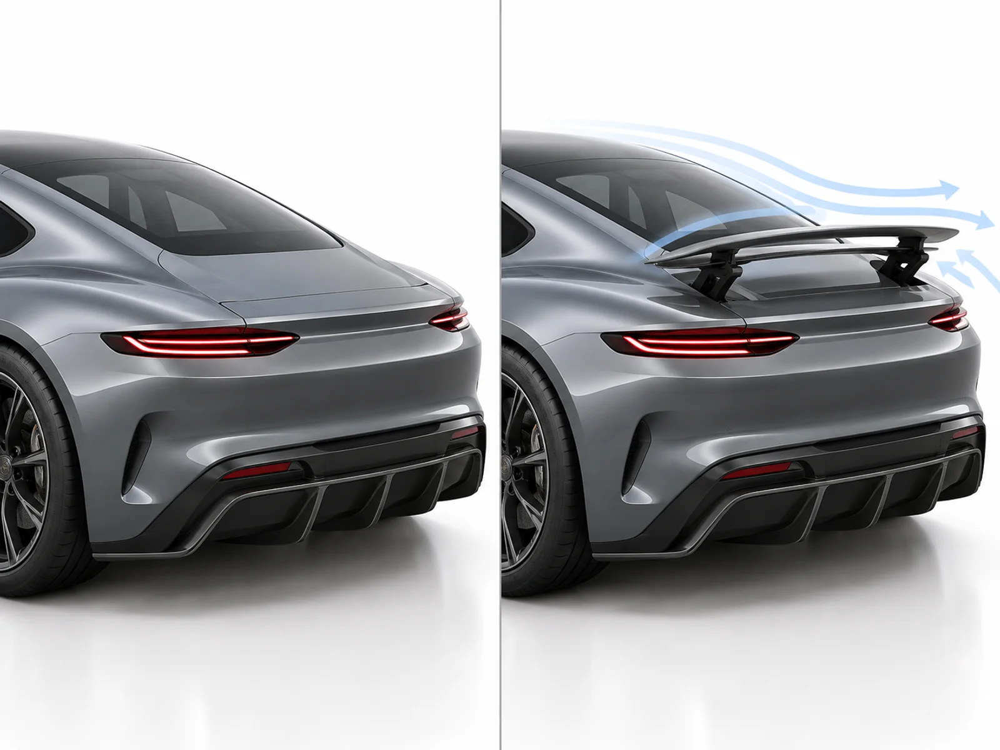
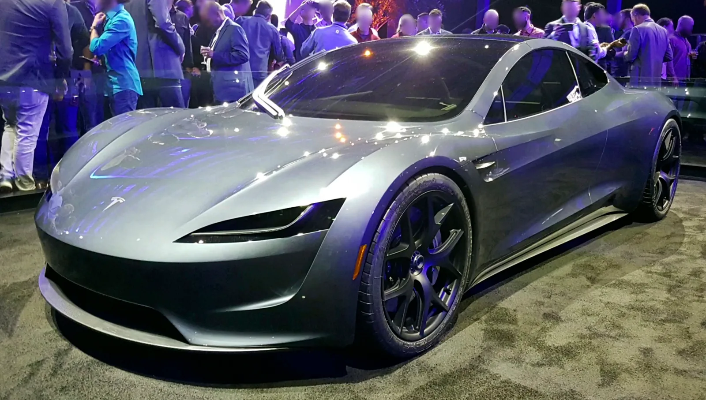

▲ 2017년 공개된 로드스터 프로토타입. 이번에 드러난 액티브 리어윙 특허가 실제 양산차에 어떤 모습으로 반영될지는 아직 미지수다 ⓒ Wikimedia Commons
테슬라가 10월 1일 미국 텍사스에서 차세대 로드스터를 공개하기 일주일 전, 미국 특허청(USPTO)에 뜬금없는 특허 출원 서류 하나가 올라왔다. 제목은 '안전 기능을 갖춘 전개형 액티브 리어윙 어셈블리(Deployable and Active Rear Wing Assembly with Safety Features)'. 오토헤럴드를 비롯한 외신들은 이 특허가 곧 공개될 로드스터에 적용될 가능성이 높은 신기술이라고 짚었다.
가장 눈에 띄는 숫자는 700kg이다. 차체 뒤쪽에 완전히 숨어 있던 날개가 솟아오르면 이 정도의 다운포스를 만들어낼 수 있다는 것이 특허 문서의 핵심 내용이다. 다만 특허 출원은 아이디어를 법적으로 보호받기 위한 절차일 뿐, 그 기술이 실제 양산차에 그대로 탑재된다는 뜻은 아니다. 완성차 업체들은 실제 적용 계획이 없는 기술도 방어적으로 특허를 걸어두는 경우가 많다.
1. 차체에 숨겼다는 윙, 정확히 어떻게 작동하나
특허 도면에 나온 구조는 흔히 보는 리어 스포일러와는 결이 다르다. '로드 모드(road mode)'에서는 메인 윙 요소가 단차(step) 구조 덕분에 트렁크 덱리드 표면과 완전히 같은 높이로 파묻히고, 리딩 엣지 슬랫은 그 앞쪽 리어 패널 아래에 숨는다. 평상시 주행 중에는 차체 어디에도 날개가 있다는 흔적이 보이지 않는 셈이다.

▲ 평소엔 완전히 숨어 있다가 필요할 때만 솟아오르는 액티브 리어윙의 작동 개념을 도식화한 이미지 ⓒ CarPrism (AI 생성 개념도, 실제 특허 도면이 아닌 원리 설명용 일러스트)
주행 상황이 바뀌면 4바 링크(four-bar linkage) 구조를 통해 두 조각이 함께 솟아오른다. 윙이 완전히 전개되면 공기저항계수가 0.035Cd 늘어나는 대신 다운포스가 1000카운트만큼 추가되고, 반대로 드래그를 줄이는 'DRS(드래그 감소 시스템)' 모드로 전환하면 공기저항이 250카운트 줄어드는 대신 다운포스는 사실상 0kg이 된다. 즉 하나의 하드웨어로 다운포스 극대화·항력 최소화·완전 은닉이라는 세 가지 상태를 오갈 수 있게 설계됐다.
📍 스스로 판단해서 움직인다
이 시스템은 사람이 버튼을 눌러 조작하는 방식이 아니라, GPS 위치, 자율주행 센서, 속도, 가속도, 조향각, 브레이크 입력값 등을 종합해 자동으로 전개 여부와 각도를 결정하도록 설계됐다. 특허 설명에 따르면 차량이 레이싱 서킷에 진입했다고 판단되면 전용 '트랙 모드'로 자동 전환되는 로직도 포함돼 있다.
2. '충돌 직전엔 다시 숨는다' — 안전장치까지 특허에 포함
고속에서 노출되는 부품인 만큼, 특허는 안전 기능에도 상당한 분량을 할애하고 있다. 후방 추돌이 임박했다고 판단되면 센서 기반으로 윙을 범퍼 라인에 맞춰 먼저 접어 넣는다. 여기에 더해 기계식 충격 감지·이탈(breakaway) 구조까지 갖춰, 전자 시스템이 미처 반응하지 못하는 충돌 상황에서도 윙이 물리적으로 꺾여 들어가도록 설계했다고 특허는 설명한다.
이번 특허와 관련한 해외 보도의 세부 도면 해설은 아래에서 확인할 수 있다. Electrek 특허 분석 기사 바로가기
3. 700kg 다운포스, 실제로 어느 정도 수준인가
700kg이라는 숫자만 보면 감이 잘 오지 않지만, 다른 고성능차들과 비교하면 위치가 뚜렷해진다. 일반적인 스포츠카가 만들어내는 다운포스는 최고 속도 영역에서도 200kg을 밑도는 경우가 많다. 반면 현역 F1 머신은 시속 330km 부근에서 2.5톤(2,500kg) 안팎의 다운포스를 만들어내는 것으로 알려져 있다 — 차체 위에 대형 SUV 한 대를 얹어놓은 것과 맞먹는 하중이다.

▲ 현역 F1 머신은 시속 330km 부근에서 2.5톤에 달하는 다운포스를 만들어낸다(사진은 페라리 소속 F1 머신) ⓒ Der Alf / Wikimedia Commons
| 대상 | 다운포스 | 비고 |
|---|---|---|
| 일반 스포츠카 | 200kg 미만 | 고정형 스포일러 위주 |
| 테슬라 로드스터 특허 (액티브 윙 전개 시) | 최대 700kg | 시속 161km 이상, 최대 다운포스 모드 |
| 현역 F1 머신 | 약 2,500kg | 시속 330km 부근 기준 |
즉 이 특허대로 구현된다면 로드스터는 일반 양산 스포츠카보다는 확연히 강력하지만, F1 머신에는 크게 못 미치는 수준의 다운포스를 갖추게 되는 셈이다. 그럼에도 양산 전기차에 이 정도 다운포스를 완전히 숨긴 채 구현한다는 발상 자체가 이례적이라는 평가가 나온다.
4. 8년 넘게 미뤄진 로드스터, 이번엔 다를까
테슬라 2세대 로드스터는 지연의 역사 그 자체다. 2017년 11월 처음 프로토타입이 공개됐을 당시, 테슬라는 정지 상태에서 시속 100km까지 2초 미만에 도달하는 가속 성능과 1회 충전 최대 1,000km에 가까운 주행거리, 그리고 2020년 출시를 약속했다.
✅ 로드스터 출시 지연 타임라인
· 2017년 11월 — 프로토타입 최초 공개, 2020년 출시·예약금 5만 달러 발표
· 2020년 — 예정된 출시 시점을 넘기며 일정 연기
· 2021~2023년 — 출시 목표 시점이 매년 다음 해로 순연
· 2024~2025년 — '양산 목표' 언급은 이어졌지만 구체적 공개 일정은 재차 미뤄짐
· 2026년 — 10월 1일 텍사스 공개로 재공지, 공개 직전 이번 다운포스 특허 공개

▲ 2017년 로드스터 프로토타입을 다른 각도에서 본 모습. 이 차가 공개된 지 9년 가까이 지났지만 양산차는 아직 나오지 않았다 ⓒ Wikimedia Commons
9년 가까운 기다림은 예약자들 사이에서도 피로감을 키웠다. 5만 달러(약 7,000만 원)를 내고 1차 예약한 고객 중 일부는 아직 차를 받지 못한 상태이며, 샘 알트먼 오픈AI CEO가 자신도 로드스터 예약금을 내고 7년 넘게 기다리고 있다며 공개적으로 불만을 드러내 일론 머스크와 설전을 벌이기도 했다.
5. 머스크가 예고한 '날아다니는 로드스터'와 SpaceX 패키지
로드스터를 둘러싼 화제는 다운포스 특허 하나에 그치지 않는다. 일론 머스크는 그동안 여러 차례 로드스터에 'SpaceX 패키지'라는 선택 사양을 언급해왔다. 뒷좌석 2석 자리에 로켓용 초고압 공기 탱크를 넣고, 그 압축공기를 차체 곳곳에 배치한 콜드 가스 스러스터(cold gas thruster) 약 10개로 분사하는 방식이다. 연소나 열 발생 없이 약 10,000psi의 초고압 공기를 그대로 내뿜는 구조로 알려져 있다.
📍 "이 차는 날 수 있다"
머스크는 SpaceX 패키지가 가속·최고속도·제동·코너링을 모두 극적으로 끌어올린다고 설명해왔으며, 기본 로드스터의 0→시속 96km(60mph) 가속이 약 1.9초인 데 비해 SpaceX 패키지를 장착하면 1초 미만까지 단축될 수 있다고 언급한 바 있다. 더 나아가 "새 테슬라 로드스터는 날 수 있다(can fly)"는 발언까지 내놓았고, 외신들은 텍사스 SpaceX 맥그리거 시험장에서 스러스터를 이용한 호버링(공중 부양) 시연이 계획됐다고 전하기도 했다. 다만 스러스터 소음이 커 시연 차량은 원격 조종될 것으로 알려졌다.
이번 다운포스 특허와 SpaceX 패키지는 서로 다른 기술이지만, 맥락은 이어진다. 액티브 리어윙이 고속 주행 시 접지력을 담당하는 '전통적인 자동차 공력 기술'이라면, SpaceX 패키지는 아예 항공우주 기술을 차량에 직접 이식하려는 시도다. 10월 1일 공개 행사에서 이 두 기술 중 무엇이 실제로 양산 사양에 포함될지, 혹은 둘 다 옵션으로 제공될지가 핵심 관전 포인트로 꼽힌다.
6. 요약
테슬라가 로드스터 공개를 앞두고 출원한 특허는 평소 차체에 완전히 숨어 있다가 고속 주행 시에만 전개돼 최대 700kg의 다운포스를 만드는 2피스 액티브 리어윙 시스템이다. GPS·센서 데이터를 활용해 자동으로 작동하며, 충돌이 임박하면 스스로 수납되는 안전장치도 갖췄다.
700kg은 일반 스포츠카(200kg 미만)보다는 훨씬 강력하지만, F1 머신(약 2.5톤)에는 크게 못 미치는 수준이다. 다만 특허 출원이 곧 양산 탑재를 의미하지는 않는다는 점은 분명히 해둘 필요가 있다.
로드스터는 2017년 최초 공개 이후 2020년으로 예정됐던 출시가 8년 넘게 미뤄져 왔고, 이번에도 10월 1일 공개 행사에서 실제 사양이 확정되기 전까지는 이 특허 기술의 탑재 여부를 단정할 수 없다. 머스크가 예고해온 SpaceX 콜드 가스 스러스터 패키지와 함께 공개 현장에서 어떤 조합으로 등장할지가 관건이다.